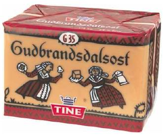

Home Page
F.A.Qs
Statistical Charts
Past Contests
Scheduled Contests
Award Contest
| Online Judge | Problem Set | Authors | Online Contests | User | ||||||
|---|---|---|---|---|---|---|---|---|---|---|
| Web Board Home Page F.A.Qs Statistical Charts | Current Contest Past Contests Scheduled Contests Award Contest | |||||||||
|
Language: Kingdom
Description King Kong is the feared but fair ruler of Transylvania. The kingdom consists of two cities and N < 150 towns, with nonintersecting roads between some of them. The roads are bidirectional, and it takes the same amount of time to travel them in both directions. Kong has G < 353535 soldiers.
Due to increased smuggling of goat cheese between the two cities, Kong has to place his soldiers on some of the roads in such a way that it is impossible to go from one city to the other without passing a soldier. The soldiers must not be placed inside a town, but may be placed on a road, as close as Kong wishes, to any town. Any number of soldiers may be placed on the same road. However, should any of the two cities be attacked by a foreign army, the king must be able to move all his soldiers fast to the attacked city. Help him place the soldiers in such a way that this mobilizing time is minimized. Note that the soldiers cannot be placed in any of the cities or towns. The cities have ZIP-codes 95050 and 104729, whereas the towns have ZIPcodes from 0 to N - 1. There will be at most one road between any given pair of towns or cities. Input The input contains several test cases. The first line of each test case is N, G and E, where N and G are as defined above and E < 5000 is the number of roads. Then follow E lines, each of which contains three integers: A and B, the ZIP codes of the endpoints, and φ, the time required to travel the road,φ < 1000. The last line of the input is a line containing a single 0. Output For each test case in the input, print the best mobilizing time possible, with one decimal. If the given number of soldiers is not enough to stop the goat cheese, print "Impossible" instead. Sample Input 4 2 6 95050 0 1 0 1 2 1 104729 1 95050 2 1 2 3 3 3 104729 1 4 1 6 95050 0 1 0 1 2 1 104729 1 95050 2 1 2 3 3 3 104729 1 4 2 7 95050 0 1 0 1 2 1 104729 1 95050 2 1 2 3 3 3 104729 1 2 1 5 0 Sample Output 2.5 Impossible 3.0 Source |
[Submit] [Go Back] [Status] [Discuss]
All Rights Reserved 2003-2013 Ying Fuchen,Xu Pengcheng,Xie Di
Any problem, Please Contact Administrator